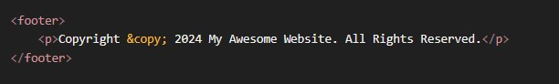

HTML MEDIA
First Principle: The Web is More Than Text and Images
The fundamental truth is that a webpage should be able to deliver any kind of content, not just static text and pictures. For years, this was a major problem. To play a video or audio file, browsers had to rely on third-party plugins like Adobe Flash, QuickTime, or Silverlight. This was inefficient, insecure, and inconsistent across different computers.
The Core Problem
How can we embed video and audio into a webpage in a standardized, native, and plugin-free way? We need a universal system that works on every modern browser, from a desktop PC to a mobile phone, without requiring the user to install anything extra.
The Logical Solution: The HTML5 <video> and <audio> Tags
The solution was to create dedicated HTML tags whose sole purpose is to embed and control media.
Part 1: The Basics - Getting a Video on the Page
The star of the show is the <video> tag. At its simplest, it just needs to know the source of the video file.
code Html
downloadcontent_copy
expand_less

The Problem We Immediately Face: If you put this on a page, you'll just see the first frame of the video as a static image. You can't play it, pause it, or change the volume. It's not a video player; it's just a video frame.
The Solution: We need to add player controls. The browser has a beautiful set of default controls built-in, and we can turn them on with a simple attribute.
The controls Attribute: The Magic Switch
The controls attribute is a boolean attribute. You don't need to set it to a value (controls="true" is unnecessary); its mere presence turns the feature on.
code Html
downloadcontent_copy
expand_less
IGNORE_WHEN_COPYING_START
IGNORE_WHEN_COPYING_END
Result: You now have a fully functional video player on your page, complete with a play/pause button, a timeline scrubber, volume controls, and a fullscreen option. This is the simplest, most effective way to embed a video.
Part 2: Intermediate - Gaining More Control with Attributes
Now that we have a player, how do we control its behavior and appearance? We use attributes.
-
width and height: Just like with an <img> tag, you can set the dimensions of the player.
code Html
downloadcontent_copy
expand_less
IGNORE_WHEN_COPYING_START
IGNORE_WHEN_COPYING_END

-
autoplay: This attribute will make the video start playing as soon as the page loads.
code Html
CRITICAL CAVEAT: Modern browsers (Chrome, Safari, Firefox) will block autoplay with sound because it's a terrible user experience. To make autoplay work, you almost always have to add the muted attribute as well.
downloadcontent_copy
expand_less
IGNORE_WHEN_COPYING_START
IGNORE_WHEN_COPYING_END
- loop: Makes the video automatically restart from the beginning when it finishes. Great for background videos.
-
poster: This is a fantastic feature for user experience. It specifies an image to display before the video is played, just like a YouTube thumbnail.
code Html
downloadcontent_copy
expand_less
IGNORE_WHEN_COPYING_START
IGNORE_WHEN_COPYING_END
Part 3: The <audio> Tag
The good news is that the <audio> tag works almost identically to the <video> tag, just without the visual component.
The Problem: How do we embed a sound file (like a song or a podcast) with player controls?
The Solution: Use the <audio> tag with the controls attribute.
code Html
downloadcontent_copy
expand_less
IGNORE_WHEN_COPYING_START
IGNORE_WHEN_COPYING_END
Result: A clean audio player with play/pause, a timeline, and volume controls. It uses the same attributes like autoplay, loop, and muted.
Part 4: Advanced & Professional - Solving Real-World Problems
This is where we move from just making a player work to making it work for everyone, on every browser.
Problem #1: Not all browsers support the same video formats.
Chrome might prefer the modern .webm format, while Safari on an iPhone might only support .mp4. If you only provide one src, some of your users won't be able to see your video.
The Solution: The <source> Element
Instead of putting the src on the <video> tag itself, you can provide multiple formats inside the tag using the <source> element. The browser will go down the list and play the first one it supports.
code Html
downloadcontent_copy
expand_less
IGNORE_WHEN_COPYING_START
IGNORE_WHEN_COPYING_END
This is the robust, professional way to embed media. The type attribute tells the browser what kind of file it is so it doesn't have to waste time downloading a file it can't play.
Problem #2: Your video is not accessible.
Users who are deaf or hard of hearing can't understand your video. Users in a noisy environment (or a quiet office) can't listen to the audio. Users speaking another language won't understand it.
The Solution: The <track> Element
The <track> element allows you to add timed text tracks, such as subtitles or captions. It's a self-closing tag that points to a special text file, usually in WebVTT (.vtt) format.
code Html
downloadcontent_copy
expand_less
IGNORE_WHEN_COPYING_START
IGNORE_WHEN_COPYING_END
Breakdown:
- src: Path to the .vtt file.
- kind: The type of track. The most common are:
- captions: A direct transcription of the dialogue and important sounds, for users who can't hear the audio.
- subtitles: A translation of the dialogue into another language.
- descriptions: A separate audio description for visually impaired users.
- srclang: The language of the track file (e.g., "en" for English).
- label: The name that appears in the video player's captions menu.
This makes your video accessible to a much wider audience and is a critical part of professional web development.
Example 1: The Robust & Professional Method (<source>)
codeHtml
This method's primary purpose is to ensure maximum browser compatibility.
The First Principle: Not all web browsers support the same video file formats.
- .mp4 (H.264 codec): This is the most widely supported format today. Almost all modern browsers can play it.
- .webm (VP8/VP9 codec): This is an open-source format heavily promoted by Google. It has excellent support in Chrome and Firefox.
- .ogg (Theora codec): This was an older open-source alternative, more popular before .webm took over.
How It Works (The Logic):
This code gives the browser a list of options. The browser will read this list from top to bottom and play the very first video format it understands.
- The browser first sees <source src="movie.mp4" ...>. It asks itself, "Can I play MP4 video?"
- If the answer is YES, it loads movie.mp4, plays it, and completely ignores the rest of the <source> tags.
- If the answer is NO, it moves to the next option.
- The browser then sees <source src="movie.ogg" ...>. It asks, "Okay, can I play Ogg video?"
- If the answer is YES, it loads movie.ogg and plays it.
- If the answer is NO, it has no other options.
The Fallback Text:
The text "Your browser does not support the video tag." is the final fallback. It will only be displayed if the user is on an extremely old browser (like Internet Explorer 8) that doesn't even recognize what the <video> tag is.
In Summary (Example 1):
- Pros: The most reliable and professional way to embed video. It provides multiple formats to ensure your video will play for the largest possible audience across different browsers and devices.
- Cons: Requires you to have your video file encoded in multiple formats, which takes extra work.
Example 2: The Simple & Direct Method (src attribute)
codeHtml
This method's primary purpose is simplicity and directness.
How It Works (The Logic):
This code gives the browser a single, direct command: "Play the file a.mp4." There are no other options.
- The browser sees the src attribute and asks itself, "Can I play MP4 video?"
- If the answer is YES, it loads a.mp4 and plays it.
- If the answer is NO, the video simply will not play. The user will likely see an error message or a black box.
In Summary (Example 2):
- Pros: Very simple to write and easy to read. You only need one video file.
- Cons: It's an "all or nothing" approach. If the user's browser doesn't support the .mp4 format for some reason, the video fails completely. There is no fallback option.
Comparison Table
| Feature | Example 1 (<source>Method) | Example 2 (src Method) |
|---|---|---|
| Browser Compatibility | Excellent. Provides multiple formats as fallbacks. | Good, but not guaranteed. Relies on a single format. |
| Flexibility | High. You can list many different formats. | Low. Only one format is possible. |
| Simplicity | More complex. Requires multiple lines and files. | Very simple. Requires only one line. |
| Fallback for Old Browsers | Excellent. Provides custom text if the <video> tag fails. | None. |
| Best Use Case | Public-facing websites where you need to support all users. | Quick tests, internal projects, or when you are 100% certain your target audience supports your one format. |
Conclusion: Which One Should You Use?
For any serious, public website, you should always prefer the first method using the <source> element. It is the industry best practice.
However, since .mp4 has become so universally supported in the last few years, many developers now take the shortcut and use the second, simpler method for convenience, especially for internal or less critical projects. But they are accepting the small risk that it might not work for every single user.
The Two Ways to Create the Copyright Symbol ©
You can use either the entity name or the entity number. Both produce the exact same result. The entity name is generally easier to remember.
- Using the Entity Name (Recommended)
Code: ©
Example Usage in a Footer:
codeHtml
How it renders in the browser:
Copyright © 2024 My Awesome Website. All Rights Reserved.
- Using the Entity Number
This method uses the character's numerical code. It works just as well but is less descriptive.
Code: ©
Example Usage:
codeHtml
How it renders in the browser:
Copyright © 2024 My Awesome Website. All Rights Reserved.
Other Common Symbol Entities You Should Know
The same principle applies to other common symbols.
| Symbol | Description | Entity Name | Entity Number |
|---|---|---|---|
| © | Copyright | © | © |
| ® | Registered Trademark | ® | ® |
| ™ | Trademark | ™ | ™ |
| < | Less-than (for showing code) | < | < |
| > | Greater-than (for showing code) | > | > |
| & | Ampersand | & | & |
| " | Double Quote | " | " |
| € | Euro Sign | € | € |
Why do we need entities for < and >?
Because the browser would interpret < and > as the start or end of an HTML tag. If you want to literally display the text <p> on your page, you must write <p>.